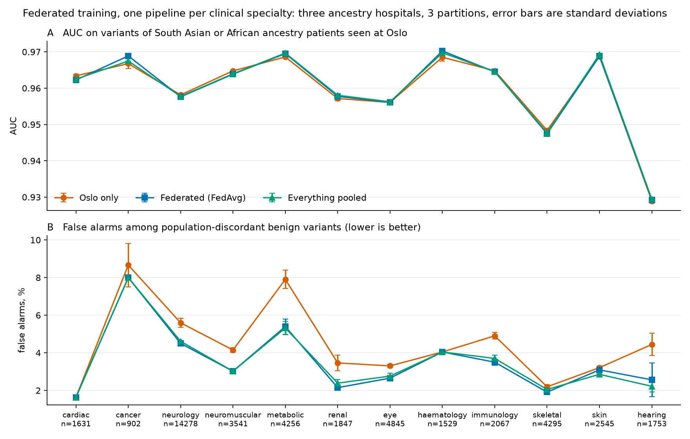

Three simulated hospitals, Oslo with 20,000 patients of European ancestry, Karachi with 4,000 patients of South Asian ancestry and Lagos with 4,000 patients of African ancestry, judged missense variants in three disease areas built from gene panels signed off by the NHS: heart, 6 panels, 104 genes and 8,790 variants; inherited cancer, 9 panels, 41 genes and 4,107 variants; every signed-off panel, 296 panels, 4,206 genes and 127,618 variants.
Every expert verdict, prediction score and population frequency is real, from ClinVar, dbNSFP and gnomAD; every patient, every carrier count and which hospital has classified which variant is simulated, and so is the public database that covers Europeans only.
False alarms across three disease areas
In each area the test variants that matter are the harmless ones that are common in one population and at least ten times rarer in another, because those are the ones a public database can get wrong: 183 in the heart area, 100 in inherited cancer and 3,396 across every panel. The table counts how many of them one model, with one fixed threshold, wrongly flags, and the only thing that changes is what the model is told about frequency.
| What the model is told about frequency | Heart, of 183 | Inherited cancer, of 100 | Every panel, of 3,396 |
|---|---|---|---|
| Nothing | 15 | 12 | 566 |
| The public database, Europeans only | 7 | 8 | 375 |
| The patient's own hospital, Oslo | 11 | 9 | 420 |
| Counts from all three hospitals | 2 | 3 | 110 |
| The true frequency in every population, which no hospital has | 2 | 3 | 110 |
- Heart. Going from the public database to the counts from all three hospitals removed 5 false alarms and introduced none, p = 0.0625. Official: 5 NVIDIA FLARE runs, and the federated model left 2 false alarms of 183 in every run.
- Inherited cancer. Going from the public database to the counts from all three hospitals removed 5 false alarms and introduced none, p = 0.0625. Official: 5 NVIDIA FLARE runs, and the federated model left 3 false alarms of 100 in every run.
- Every panel. Going from the public database to the counts from all three hospitals removed 266 false alarms and introduced 1, p = 2.3 × 10−78. A first look from the same scripts, without a federated run.
The share of harmful test variants still caught, with the public database first and the hospitals' counts second, was 0.919 and 0.919 in the heart area, 0.912 and 0.911 in inherited cancer and 0.948 and 0.947 across every panel.

Twelve clinical specialties
Every panel gives enough genes to repeat the comparison inside twelve clinical specialties: cardiac, cancer, neurology, neuromuscular, metabolic, renal, eye, haematology, immunology, skeletal, skin and hearing. Three models per specialty, one trained at Oslo alone, one federated across the three hospitals and one on all the rows in one place, all told the same thing about frequency.

| Specialty | Genes | Discordant benign variants | False alarms, Oslo alone | federated | pooled | AUC, Oslo alone | federated | pooled |
|---|---|---|---|---|---|---|---|---|
| cardiac | 104 | 122 | 2 | 2 | 2 | 0.9634 | 0.9623 | 0.9625 |
| cancer | 41 | 50 | 4.3 | 4 | 4 | 0.9668 | 0.9689 | 0.9675 |
| neurology | 2,160 | 1,489 | 83.3 | 67 | 68.7 | 0.9582 | 0.9576 | 0.9577 |
| neuromuscular | 442 | 474 | 19.7 | 14.3 | 14.3 | 0.9648 | 0.9639 | 0.9639 |
| metabolic | 795 | 426 | 33.7 | 23 | 22.7 | 0.9686 | 0.9695 | 0.9697 |
| renal | 260 | 279 | 9.7 | 6 | 6.7 | 0.9571 | 0.9578 | 0.9580 |
| eye | 595 | 615 | 20.3 | 16.3 | 17 | 0.9561 | 0.9561 | 0.9562 |
| haematology | 243 | 173 | 7 | 7 | 7 | 0.9685 | 0.9702 | 0.9698 |
| immunology | 378 | 333 | 16.3 | 11.7 | 12.3 | 0.9648 | 0.9645 | 0.9645 |
| skeletal | 495 | 471 | 10.3 | 9 | 9.7 | 0.9484 | 0.9475 | 0.9477 |
| skin | 281 | 280 | 9 | 8.7 | 8 | 0.9688 | 0.9688 | 0.9693 |
| hearing | 165 | 195 | 8.7 | 5 | 4.3 | 0.9289 | 0.9293 | 0.9294 |
Orange cells: Oslo alone worse than federated. Specialties share genes, so only the comparison between the three models inside one specialty means anything. The numbers per specialty are in docs/disease_areas_table.md, averaged over three deals of the training variants on the all-panels table as it stood before the gene-name pass.
Over four quarters
The three hospitals grow to their final size in four equal steps and the model is retrained each quarter on the verdicts held so far; the heart area is shown. A simulation replayed quarter by quarter. Q4 is step 2's build, replayed byte for byte.

| Quarter | Patients at Oslo / Karachi / Lagos | False alarms of 183, public database | False alarms of 183, hospitals' counts | Readings changed at Oslo, of 8,682 |
|---|---|---|---|---|
| Q1 | 5,000 / 1,000 / 1,000 | 9 | 4 | 306 |
| Q2 | 10,000 / 2,000 / 2,000 | 7 | 3 | 430 |
| Q3 | 15,000 / 3,000 / 3,000 | 7 | 2 | 450 |
| Q4 | 20,000 / 4,000 / 4,000 | 7 | 2 | 467 |
What the accuracy score cannot see
The usual summary score, AUC, stayed between 0.97 and 0.98 whatever the model was told and whichever hospital trained it. On the heart test set AlphaMissense alone reaches an AUC of 0.950, the gene name alone 0.916, and within single genes the scores still reach about 0.93 to 0.95. So the AUC reports how the expert verdicts were made, and the false alarms above are the measurement that needs the hospitals' counts.
Try it
The full write-ups on GitHub: step3_results.md, step4_results.md, cancer_results.md, disease_areas.md, disease_areas_table.md, quarterly_replay.md.
A research prototype from a hackathon. The hospitals and their patients are simulated. It must not be used for patient care. Code and write-ups: the repository on GitHub.